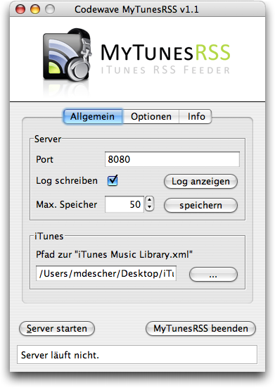
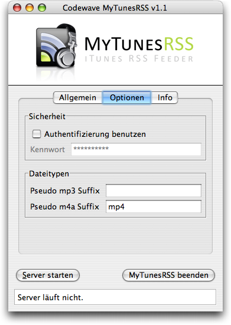
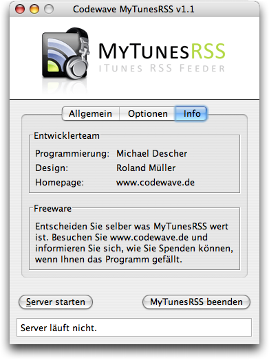

Nach dem Start der Anwendung sehen Sie die Konfigurationsoberfläche. Die Einstellungen sind auf drei Seiten verteilt. Auf der ersten Seite befinden sich die allgemeinen Einstellungen.
Sie können den Port, auf dem der Server auf Verbindungen wartet, frei wählen. Der Standardport 8080 des Tomcat Servers sollte in den meisten Fällen problemlos funktionieren. Auf manchen Systemen kann die Benutzung von Portnummern unter 1024 eingeschränkt sein. Wenn Sie eine Supportanfrage an Codewave Software stellen, schicken Sie bitte möglichst immer ein Log mit. Mit dem Knopf "Log öffnen" können Sie sich das Serverlog anzeigen. Normalerweise sollten Sie das detaillierte Logging nicht aktivieren. Bei Problemen kann es jedoch für eine Diagnose notwendig sein.
Im unteren Teil der allgemeinen Einstellungen müssen Sie den Pfad zu der Datei "iTunes Music Library.xml" auf Ihrem System angeben. Sie können den Pfad direkt in das Eingabefeld schreiben oder mit dem (...) Knopf suchen und auswählen.
Auf der zweiten Seite finden Sie weitere Optionen. Diese sind nur in der registrierten Version verfügbar. Sie können die Authentifizierung in der Webanwendung ein- und ausschalten und das entsprechende Kennwort vergeben. Das Kennwort wird unverschlüsselt gespeichert. Verwenden Sie daher bitte möglichst kein Kennwort, das sie an anderer Stelle für den Schutz von kritischen Daten verwenden.
Die Angabe eines Pseudo-Suffix kann nötig sein, wenn das Zielgerät, auf dem Sie den RSS Feed benutzen möchten, die Standardendung nicht unterstützt. Die Playstation Portable mit Firmware 2.60 kann AAC Dateien mit der Standardendung M4A nicht abspielen, sondern unterstützt nur die Endung MP4. Sie können also dem Zielgerät mit dieser Einstellung für die beiden unterstützten Typen MP3 und M4A eine alternative Endung anbieten.
Auf der dritten Seite finden Sie Informationen zum Entwicklerteam und die Möglichkeit Ihren Registrierungsschlüssel einzugeben. Nach der Aktivierung wird der aktuelle Schlüssel in den beiden Feldern angezeigt, kann aber nicht mehr verändert werden.
Unter den Konfigurationsseiten befinden sich die Knöpfe zum Starten und Stoppen des Servers und zum Beenden der Anwendung. Während der Server läuft, können Sie keine Einstellungen verändern.
Beim Beenden des Programmes wird ein eventuell noch laufender Server zuerst gestoppt. Die Fensterposition wird automatisch für den nächsten Start gespeichert. Wenn Sie Änderungen an den Einstellungen vorgenommen haben, werden Sie beim Beenden von MyTunesRSS gefragt, ob Sie diese für den nächsten Start speichern möchten.